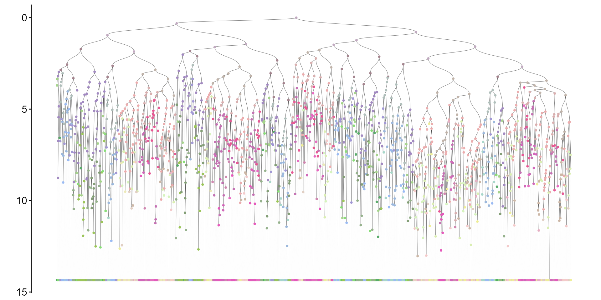

Basic tutorial on Quantitative Fate Mapping (QFM)
Weixiang Fang
basic_tutorial.RmdRead example data
In this example, we demonstrate quantitative fate mapping on lineage barcode data measured with cell types. First, we apply Phylotime to reconstruct time-scaled phylogeny from lineage barcodes. Second, ICE-FASE is applied to extract parameters of progenitor population dynamics, including commitment times, progenitor population sizes and commitment biases.
We start with a character matrix, the example data is in the format below. An cell id is required, and is provided in the first column.
# read mutant allele matrix
cell_allele_table = readr::read_csv("../data/example/mutant_allele_matrix_with_missing.csv")
cell_allele_table[1:5]## # A tibble: 1,600 × 5
## cell Site_1 Site_2 Site_3 Site_4
## <chr> <chr> <chr> <chr> <chr>
## 1 type_-1_gen_4_1 Site1_Mut3 Site2_Mut28 Site3_Mut1 Site4_Mut50
## 2 type_-1_gen_4_2 Site1_Mut3 Site2_Mut28 Site3_Mut19 NA
## 3 type_-1_gen_4_3 Site1_Mut3 Site2_Mut28 Site3_Mut1 Site4_Mut1
## 4 type_-1_gen_4_4 Site1_Mut15 Site2_Mut3 Site3_Mut12 NA
## 5 type_-1_gen_4_5 Site1_Mut15 Site2_Mut3 Site3_Mut12 Site4_Mut4
## 6 type_-1_gen_4_6 Site1_Mut15 Site2_Mut14 Site3_Mut2 Site4_Mut7
## 7 type_-1_gen_4_7 Site1_Mut3 Site2_Mut28 NA Site4_Mut33
## 8 type_-1_gen_4_8 Site1_Mut3 Site2_Mut28 NA Site4_Mut1
## 9 type_-1_gen_4_9 Site1_Mut3 Site2_Mut28 Site3_Mut1 Site4_Mut8
## 10 type_-1_gen_4_10 Site1_Mut3 Site2_Mut28 Site3_Mut9 Site4_Mut52
## # ℹ 1,590 more rowsFirst, we convert the table to a character matrix
Imputing missing data
Generally, mutation matrix contains missing data. We will use
impute_characeters to impute the missing data.
chr_mat_imputed = impute_characters(chr_mat, nrounds = 100)Running Phylotime
The input to Phylotime is a character matrix, with rows corresponding to cells and columns corresponding to barcoding sites, tibble / data.frame are convert to a character matrix. The matrix needs to have rownames, which will be used as the names of the cells.
Within each barcoding site (column), the same character denotes a unique mutant allele. The unmutated allele needs to be coded as the character “0”. (zero) The user also needs to input the total amount of active barcoding time, which is the duration for which mutations are being actively generated.
Phylotime estimates mutation rate from data provided and assumes a uniform allele emergence probability by default. More on how to set user-defined mutation parameters when prior information is available.
By default, Phylotime uses future to parallel pairwise distance estimations, use plan to set up parallel method and number of workers. Alternatively, set ‘parallel=F’.
In this example, barcoding activates at 0.6 days, and samples are collected at 15 days.
If mutation rate or allele emergence probabilities are known a priori, they can be provided to phylotime
mut_rate_tb = read_csv("../data/example/mut_p_mut_rate.csv")
mut_rate_tb## # A tibble: 50 × 2
## site rate
## <chr> <dbl>
## 1 site_1 0.937
## 2 site_2 0.430
## 3 site_3 0.641
## 4 site_4 0.430
## 5 site_5 0.937
## 6 site_6 0.430
## 7 site_7 0.394
## 8 site_8 0.269
## 9 site_9 0.936
## 10 site_10 0.534
## # ℹ 40 more rows
allele_prob_tb = read_csv("../data/example/mut_p_recur_vec.csv")
allele_prob_tb## # A tibble: 137,548 × 3
## site mutation prob
## <chr> <chr> <dbl>
## 1 Site_1 Site1_Mut1 0.0756
## 2 Site_1 Site1_Mut2 0.0621
## 3 Site_1 Site1_Mut3 0.0608
## 4 Site_1 Site1_Mut4 0.0483
## 5 Site_1 Site1_Mut5 0.0455
## 6 Site_1 Site1_Mut6 0.0402
## 7 Site_1 Site1_Mut7 0.0390
## 8 Site_1 Site1_Mut8 0.0387
## 9 Site_1 Site1_Mut9 0.0375
## 10 Site_1 Site1_Mut10 0.0320
## # ℹ 137,538 more rows
tr = phylotime(chr_mat_imputed,
mut_rate = mut_rate_tb$rate,
recur_vec = make_recur_vec_list(allele_prob_tb),
t_total = 15. - 0.6)Now to visualize the reconstructed tree with the lineage barcodes:
plot_barcodes(chr_mat, tr, show_column_names = F)
To plot the reconstrcuted tree only:
plot_tr(tr)Running ICE-FASE
Next, to apply ICE-FASE, we need, in additional, the terminal cell state classifications. This is provided as a named vector, where the name correspond to cell names. We can visualzie the tree with terminal cell states:
cell_type_tb = read_csv("../data/example/cell_type.csv")
sc_celltypes = cell_type_tb$type
names(sc_celltypes) = cell_type_tb$cell
plot_barcodes(chr_mat[, 1:50], tr, tip_celltype = sc_celltypes, show_column_names = F)
To run ICE-FASE: (‘root_time’ is the time until barcode activation.)
res = ice_fase(tr, sc_celltypes, total_time = 15 - 0.6, root_time = 0.6)ICE-FASE results
With ICE-FASE fitted, a number of progenitor states are identified as nodes in the fate map topology. We can plot the reconstructed fate map topology with commitment times now. Note that the inferred progenitor states (iP) are denoted as “Node-x” below.
plot_topology(gr = res$gr,
total_time = 15,
gr_node_time = res$gr_trans_time,
type_col = res$col_pal,
show_node_label = T)To visualize the internal node state assignment in reconstructed phylogeny:
plot_tr(res$tr,
node_types = res$tr_node_assign,
type_col = res$col_pal) To visualize distribution of Inferred Commitment Event (ICE) times:
plot_ice_times(res)To visualize progenitor population sizes:
plot_node_sizes(res)
Finally, we can get a summary table for the progenitor state estimates:
output_estimates(res)## # A tibble: 15 × 9
## progenitor_state commitment_time population_size downstream_state1
## <chr> <dbl> <dbl> <chr>
## 1 Node-1 2.57 10 Node-2
## 2 Node-2 4.92 47 Node-6
## 3 Node-3 3.85 20 Node-4
## 4 Node-4 7.57 128 Node-11
## 5 Node-5 6.61 81 Type15
## 6 Node-6 8.38 174 Node-13
## 7 Node-7 6.54 106 Node-8
## 8 Node-8 8.69 100 Type6
## 9 Node-9 7.85 105 Type8
## 10 Node-10 9.07 101 Type14
## 11 Node-11 9.53 90 Type12
## 12 Node-12 7.94 105 Type10
## 13 Node-13 9.76 112 Type2
## 14 Node-14 9.50 145 Type3
## 15 Node-15 9.85 110 Type16
## # ℹ 5 more variables: downstream_size1 <dbl>, downstream_state2 <chr>,
## # downstream_size2 <dbl>, commitment_bias1 <dbl>, commitment_bias2 <dbl>